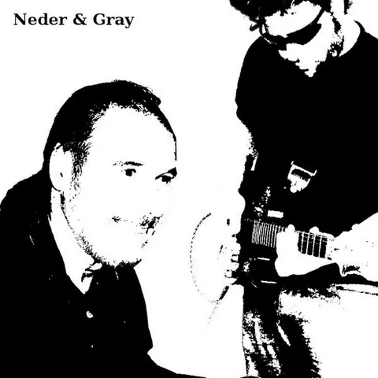

Engenharia de software · Arquitetura de soluções · Cloud
Matheus Neder
Especialista em Engenharia e Arquitetura de Software
Sou engenheiro de computação com mais de 20 anos de experiência construindo software e definindo arquiteturas. Meu trabalho vai da modernização de sistemas legados em grandes bancos a soluções que aplicam inteligência artificial à engenharia de software.
- Experiência
- 20+ anos em software e infraestrutura
- Setor financeiro
- Itaú Unibanco, Santander (Olé Consignado) e Banco Mercantil
- Nuvem
- AWS, GCP e Azure

Sobre
Como cheguei até aqui
Meu nome completo é Matheus Villela Neder Issa, mas no trabalho sou Matheus Neder. Sou formado em Engenharia de Computação pela PUC Minas e comecei em 2003, desenvolvendo sites e administrando servidores Linux como autônomo. Depois vieram o desenvolvimento de produtos e a arquitetura de soluções, com vários anos no setor financeiro, lidando com os requisitos de segurança, confiabilidade e governança dos bancos.
Nesse período, defini arquiteturas para migrar sistemas de mainframe para a nuvem aos poucos, mantendo os serviços em operação. No Olé Consignado, participei da adoção de um dos primeiros clusters Kubernetes on-premises de Belo Horizonte e da reformulação dos serviços de comissionamento com Apache Kafka.
Nas decisões de arquitetura, considero o desempenho, o custo, a capacidade de crescer e a integração com o que já existe. Também acompanho o dia a dia das equipes, tanto nas tarefas de rotina quanto na resolução de incidentes. Tenho experiência com equipes de diferentes áreas, inclusive remotas, e com liderança técnica, mentoria e revisão de práticas de desenvolvimento.
Experiência profissional
Trajetória
-
– atual
Especialista em Engenharia de Software
TOTVS · TOTVS Cloud
Criei um componente que interpreta e reescreve instruções SQL durante a execução. Com ele, aplicações que dependiam do Microsoft SQL Server também podem funcionar com Oracle Database e PostgreSQL.
- Uso IA na tradução de SQL para lidar com casos complexos de forma mais eficiente do que apenas com regras fixas, respeitando a sintaxe e o significado das instruções em cada banco.
- O componente mantém o desempenho e a compatibilidade das customizações já feitas pelas equipes internas, pelos clientes e pelos parceiros.
- Esse trabalho faz parte da estratégia da TOTVS de oferecer mais opções de infraestrutura aos clientes e reduzir custos.
- Também atuo na sustentação da TOTVS Cloud, cuidando da disponibilidade, do desempenho e da confiabilidade dos serviços e ajudando a resolver incidentes e demandas críticas dos clientes.
-
–
Arquiteto de Soluções Sênior
Banco Mercantil
Defini os modelos de arquitetura para migrar sistemas do mainframe para a nuvem pública. A migração precisava acontecer por etapas, com os sistemas antigos e novos funcionando juntos, sem interromper os serviços e atendendo às exigências regulatórias do banco.
- Desenhei arquiteturas híbridas para a convivência entre mainframe e nuvem.
- Adotei tecnologias de código aberto para evitar a dependência de fornecedores específicos.
- Defini padrões para aplicações nativas de nuvem que pudessem operar em diferentes provedores. AWS e GCP foram adotados durante a transição.
- Trabalhei na integração dos sistemas legados com as novas aplicações, buscando tolerância a falhas e reduzindo as dependências entre eles.
- Apoiei as equipes de negócio e desenvolvimento nas decisões técnicas, considerando os objetivos do banco.
-
–
Arquiteto de Soluções Sênior
Itaú Unibanco
Trabalhei remotamente na equipe de Arquitetura de Soluções. Na época, o banco se reorganizava por linhas de negócio, dando às equipes mais autonomia para decidir sobre arquitetura.
- Participei da reformulação da arquitetura de oferta de crédito, como parte da iniciativa do banco de substituir sistemas em mainframe por microsserviços projetados para escalar na AWS.
- Trabalhei com outras áreas para atender aos padrões de escalabilidade, segurança e governança do banco.
-
–
Arquiteto de Soluções
Banco Olé Consignado · Santander Brasil
Liderei a equipe de arquitetura de soluções do Olé Consignado, então subsidiária do Santander. Meu trabalho envolvia modernizar a infraestrutura e orientar as decisões técnicas da área de empréstimos consignados.
- Participei da implantação e adoção de um dos primeiros clusters Kubernetes on-premises de Belo Horizonte, para executar microsserviços e apoiar práticas DevOps.
- Reformulei os serviços de comissionamento com comunicação assíncrona via Apache Kafka, permitindo escalar o processamento e rastrear as operações.
- Defini um processo de desenvolvimento com revisão de código e cobertura mínima de testes automatizados, reduzindo retrabalho.
- Preparei treinamentos e apresentações internas sobre engenharia de software, arquitetura e DevOps.
-
–
Analista Desenvolvedor
WebAula (atual UOL Edtech)
Trabalhei na manutenção e evolução do LMS WebAula, reconhecido como a maior plataforma de e-learning do Brasil até 2017. Os projetos incluíam melhorar o acesso por celular, o desempenho e a capacidade de atender mais usuários.
- Liderei a criação do módulo Trilhas de Aprendizagem, desde a arquitetura e a modelagem de dados até o desenvolvimento, e treinei a equipe nas novas tecnologias.
- Desenvolvi o player HTML5 do Cloud Studio, a ferramenta de autoria de cursos, para reproduzir conteúdo multimídia no navegador.
- Trabalhei na reformulação dos aplicativos Android e iOS e na adaptação da ferramenta de avaliações para dispositivos móveis.
- Implementei a indexação do módulo de Perguntas e Respostas com Apache Solr.
- Automatizei a publicação de bibliotecas internas, corrigi vazamentos de memória e melhorei o desempenho das aplicações.
Início de carreira
-
–
Estagiário · CONAB – Companhia Nacional de Abastecimento
-
–
Analista Desenvolvedor · AHMG / Hospital Vila da Serra
-
–
Programador e administrador de sistemas · Autônomo
Competências
Com o que trabalho
Estas são as áreas em que tenho experiência e algumas das tecnologias que usei nos projetos.
-
Arquitetura de software e soluções
Desenho de arquiteturas híbridas, microsserviços tolerantes a falhas e integração entre sistemas, considerando desempenho, crescimento e custo.
-
Modernização de sistemas legados
Migração de sistemas de mainframe para a nuvem por etapas, mantendo os sistemas antigos e novos em funcionamento durante a transição.
-
Sistemas distribuídos e eventos
Comunicação assíncrona e arquiteturas orientadas a eventos em sistemas críticos, com rastreamento das operações entre serviços.
-
Cloud, Kubernetes e DevOps
Aplicações para nuvem que podem operar em diferentes provedores, infraestrutura como código e ambientes com contêineres.
-
Bancos de dados e busca
Modelagem de dados, ajustes de desempenho e compatibilidade entre bancos, incluindo tradução de SQL entre SQL Server, Oracle e PostgreSQL.
-
IA aplicada à engenharia de software
Uso IA em produtos, como no componente de tradução de SQL, e no desenvolvimento de software a partir de especificações.
-
Linguagens de programação
Linguagens que usei no desenvolvimento de back-ends corporativos e de sistemas de baixo nível.
-
Práticas de engenharia e liderança
Revisão de código, testes automatizados e acompanhamento técnico das equipes, com mentoria e orientação no dia a dia.
-
Linux e infraestrutura
Administração de servidores, configuração de redes, automação de tarefas e segurança dos serviços.
Também trabalhei com: ASP.NET MVC e Web API, Entity Framework, NHibernate, Xamarin (iOS, Android e Forms), Android, Angular, Node.js, Clojure, PHP, Firebird, VB6/COM+, Win32, Boost, GTKmm e Arduino.
Projetos e contribuições
Código aberto, pesquisa e apresentações
Contribuições para projetos de código aberto
-
Kubernetes: correção no addon Fluentd
Corrigi o formato de
docker.logna configuração do addon Fluentd. O pull request foi incorporado ao Kubernetes. -
Documentação do Kubernetes: link da seção vsphereVolume
Corrigi o link para uma seção da documentação oficial. Outra correção minha foi incorporada no mesmo ano (pull request #9564).
-
Prism: ObservesProperty em tipos complexos
Adicionei ao
DelegateCommandda Prism, projeto da .NET Foundation, o suporte à observação de propriedades de tipos complexos.
Alguns dos meus repositórios
-
ai-trade-agent
Experimento com um agente que negocia criptomoedas de forma autônoma na Binance Spot. Usa análise técnica e pesquisa de mercado feita por LLM para decidir as operações, com ordens de proteção na própria corretora para cada posição.
-
otc-vsts-agent-tasks
Tarefas de pipeline em Bash para Azure DevOps: build, testes, análise e deploy de aplicações .NET Core e Node.js no Kubernetes com Helm.
-
gemnsis
Protótipo de API REST para simular uma rede de conexões entre pessoas e sugerir novos contatos.
-
maverick
Modelo de arquitetura para projetos .NET Core baseado na Arquitetura Hexagonal.
-
otc-aspnetcore-apiboot
Biblioteca com recursos comuns a APIs ASP.NET Core, para reduzir o código repetido entre projetos.
-
helm-apply
Ferramenta para instalar e atualizar configurações do Kubernetes com Helm.
-
otc-pubsub
Biblioteca para trabalhar com publicação e assinatura de mensagens em .NET Standard 2.0, reunindo os detalhes de implementação em uma API.
-
environmental-stressor
Aplicação ASP.NET Core para testar ambientes como servidores e clusters.
-
Xamarin.Forms.ImagePicker
Seletor de imagens com recorte para Xamarin.Forms.
Pesquisa e apresentações
-
2018
Docker e Kubernetes: aprenda a conteinerizar e gerenciar seus aplicativos com as principais tecnologias do mercado
Palestra no Raja Valley Summit Tech (BHS/Axter).
-
2010–11
Aprendizagem móvel para usuários com limitações decorrentes da idade
Na iniciação científica no Instituto de Informática da PUC Minas, desenvolvi aplicativos para Android 1.6 usados em uma avaliação comparativa de usabilidade. Apresentei o trabalho no 19º Seminário de Iniciação Científica da PUC Minas, em 2011.
Formação
Formação acadêmica e reconhecimentos
Graduação
Engenharia de Computação
Pontifícia Universidade Católica de Minas Gerais (PUC Minas) · 2008 – 2017
Prêmios
- 2011
Destaque Acadêmico
Engenharia de Computação, PUC Minas, primeiro semestre.
- 2009
ACM ICPC
International Collegiate Programming Contest, Fase Final Brasileira.
- 2008
Destaque Acadêmico
Engenharia de Computação, PUC Minas, segundo semestre.
Formação complementar
- 2019
Lean Six Sigma Yellow Belt
Treinamento em modelagem de processos (8 horas).
- 2009
Students to Business Program
Desenvolvimento web com ASP.NET no Microsoft Innovation Center (94 horas).
Idiomas
Português
Nativo.
Inglês
Leitura e escrita avançadas; conversação intermediária.
Fora do trabalho
Música
Também sou guitarrista. Em 2011, comecei a publicar minhas composições instrumentais na internet. O cantor e letrista inglês Johnny Gray escreveu letras e melodias de voz para essas faixas, e assim nasceu o Neder & Gray.
Fazíamos tudo à distância, trocando arquivos pela internet. Eu gravava guitarras e baixo em Belo Horizonte; Johnny gravava as vozes em Leeds, na Inglaterra. O som tem influência do rock e do hard rock dos anos 1970, com guitarras mais saturadas. Entre minhas referências estão Gary Moore, Steve Vai, Joe Satriani e Zakk Wylde.
Você pode ouvir as faixas no Spotify, no meu perfil de artista: Matheus Neder.
O vídeo só carrega do YouTube quando você clica para assistir.

